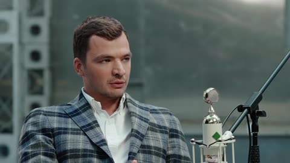
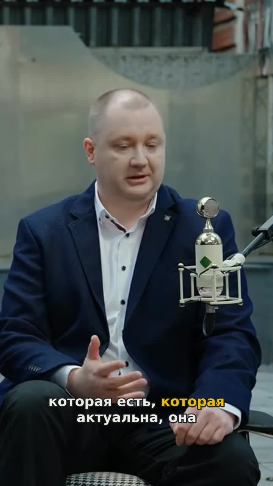
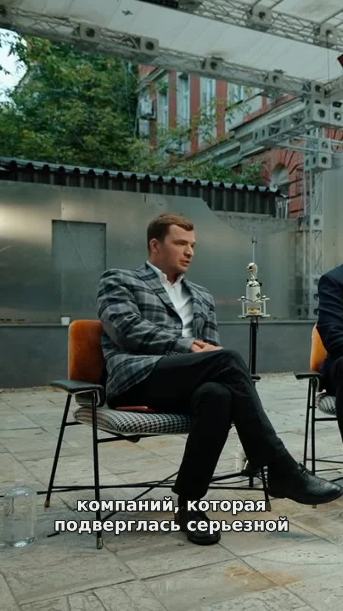
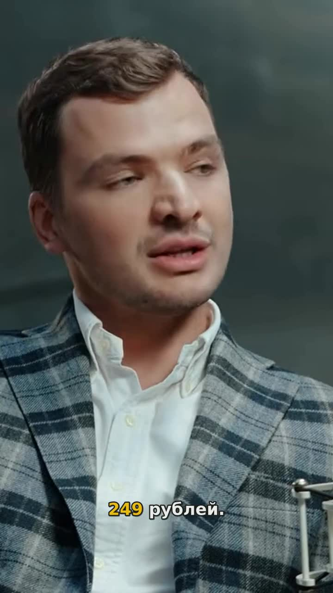
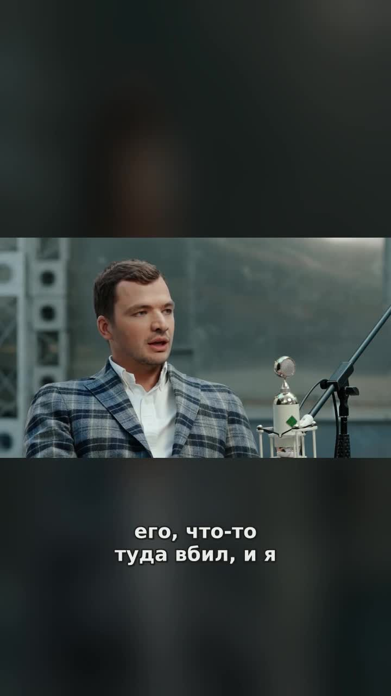
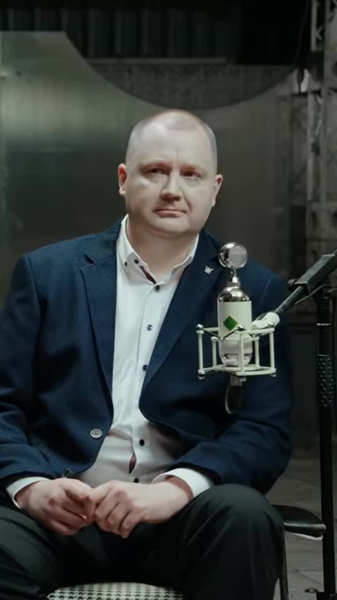

Пересматриваете всю запись ради сорока удачных секунд?
Снова пересматриваете видео целиком, чтобы найти, что выложить.
Загрузите подкаст, стрим или вебинар. Reelsovar найдёт моменты, которые цепляют зрителя, и сам нарежет из них вертикальные клипы.
Нарезать своё видеоНажмите на историю
Вы выбираете моменты.
Сервис готовит клипы.
Для авторов подкастов, интервью и экспертных видео
Теперь всю эту работу сделает нейросеть — быстрее и дешевле.
Снова пересматриваете видео целиком, чтобы найти, что выложить.
Выбираете на глаз и тратите время на эпизоды, которые не складываются в историю.
После съёмки остаются монтаж, вертикальный кадр и проверка каждой строки.
Reelsovar сам просматривает запись целиком и находит сильные моменты.
100 минут исходного видео — 990 ₽. Без подписки.
Говорящий в кадре, субтитры на месте — проверьте результат перед публикацией.
Найдёт сильные моменты и нарежет клипы — ему останется лишь проверить результат.

youtube.com/watch?v=np2Az44NJMY
Добавьте ссылку на видео или загрузите файл.

Как мошенники используют актуальные новости07:05 — 07:40 · 35 с
«Будет утечка — будем разбираться»34:36 — 35:10 · 35 с
Как меня обманули с VPN в MAX83:42 — 84:24 · 42 с
Бот для пробива не делает вас OSINT-специалистом21:08 — 21:30 · 21 с
«Два деда пришли на подкаст»: разговор про GTA 6112:24 — 112:40 · 16 сЯ безопаснику задал вопрос одной из компаний, которая подверглась серьезной утечке. Говорю: "Вы как-то пытаетесь бороться с этим, противодействовать?" Он: "Нам деньги не выделяют. Там нам посчитали, мы офигели от цены.…
Проверьте кадр и субтитры.
Получите выбранные клипы с субтитрами.

Найдите сильные моменты, выберите нужные и получите вертикальные клипы с субтитрами.
Пакет без подписки
Загрузите видео, выберите моменты и оцените первые клипы.
Карта не нужна.